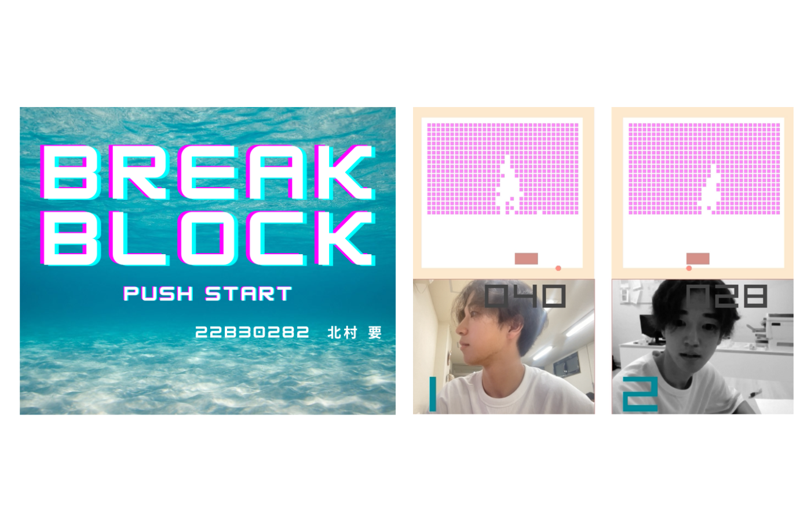

このプロジェクトは、大学の並列プログラミングの授業で実施した課題です。2024年に、Javaを用いたマルチスレッドプログラミングによる対戦型ブロック崩しゲームの開発に取り組みました。
プロジェクト名
並列プログラミング：対戦型ブロック崩しゲーム
実施時期
2024年6月
目的・概要
本プロジェクトの目的は、Javaのマルチスレッドプログラミングを活用して、2人対戦型のブロック崩しゲームを実装することです。サーバー・クライアントモデルを採用し、ネットワーク通信を用いて2人のプレイヤーが対戦できるシステムを構築しました。
使用技術・ツール
Javaを使用し、JavaFXによるGUI実装、マルチスレッドプログラミング、ソケット通信などの技術を活用しました。また、OpenCLを用いた画像処理フィルターの実装も行いました。
主な機能
- 2人対戦型のブロック崩しゲーム
- カスタマイズ可能なボード幅と移動速度
- ブロック破壊による球のスピードアップ
- ゲーム開始前の3秒カウントダウン
- 敗者側のカメラ画像に特殊フィルター適用
- 効果音の実装
技術的な実装
- サーバー・クライアントモデルの実装
- マルチスレッドによる並列処理
- OpenCLを用いた画像フィルター処理
- JavaFXによるGUI実装
- ソケット通信によるデータ同期
制作過程
まず、基本的なブロック崩しゲームの実装から始め、その後マルチスレッドプログラミングを用いて2人対戦機能を追加しました。ゲームの進行管理にはサーバー・クライアントモデルを採用し、ソケット通信を用いてプレイヤー間のデータ同期を実現しました。
次に、ゲーム性を高めるために以下の機能を追加実装しました：
- ボードの幅と移動速度のカスタマイズ機能
- ブロック破壊による球のスピードアップ
- ゲーム開始前の3秒カウントダウン
- 効果音の実装
最後に、OpenCLを用いて敗者側のカメラ画像に特殊フィルターを適用する機能を実装しました。このフィルターは画像を無彩色化し、滲み効果を加えることで敗北感を演出します。
成果・学び
このプロジェクトを通じて、以下の技術と知識を習得しました：
- Javaのマルチスレッドプログラミング
- サーバー・クライアントモデルの実装方法
- OpenCLを用いた画像処理
- JavaFXによるGUI実装
- ソケット通信によるデータ同期